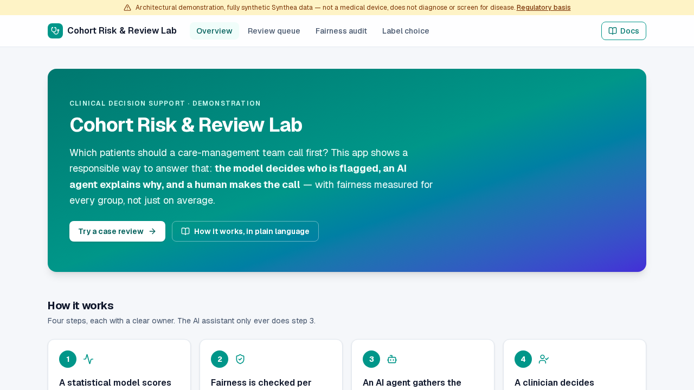

Cohort Risk & Review Lab — Fair, Clinician-Reviewed Patient Risk Stratification

A care-management team can only call so many patients. Deciding who to call first is a ranking problem, and the most dangerous failure is a model that looks accurate on average while quietly under-serving one group of patients. This project shows a responsible way to build that decision: the model decides who is flagged, an AI agent explains why, and a human makes the call — with fairness reported for every subgroup rather than as one flattering average.
Scope note: this is a research prototype built entirely on synthetic Synthea patients. It is not a medical device, does not diagnose, and does not screen for disease.
Why This Project Exists
Healthcare organizations routinely use risk scores to decide who gets extra support. Two things go wrong in practice. First, a score is often trained on a convenient label such as future cost when the real goal is future need; groups that face barriers to care generate less cost for the same illness, so they are ranked as lower risk. This is the label-choice failure documented by Obermeyer et al. (Science, 2019). Second, a single overall accuracy figure hides groups where the model performs badly.
The goal here was to build the pipeline so that these failures are measured and visible, and so that no automated component can enrol a patient on its own.
How It Works
Four steps, each with a clear owner:
- A calibrated model scores every patient. A statistical model, not a chatbot, estimates each patient's chance of a high illness burden. It never sees race.
- Fairness is audited per group. Calibration and true-positive-rate parity are reported across age, sex, race and insurance strata, with confidence intervals. Strata with too few patients are shown as "insufficient data" instead of a misleading number.
- An AI agent assembles the evidence. For each flagged patient it gathers encounters, labs and care gaps into a short case brief: drivers, corroborating evidence, and what is missing. It cannot change the score or recommend enrolment.
- A clinician decides. The reviewer reads the brief and chooses to enrol, decline or defer. Nothing happens to a patient without that decision.
The Label-Choice Experiment
The most instructive part of the app is a single interactive artifact: two otherwise identical models, one trained to predict cost and one trained to predict illness burden. On this synthetic cohort, which has a deliberately injected access gap, the cost-trained model enrols Black patients at a lower rate — a gap of 5.7 percentage points between the two labels. It demonstrates the mechanism on controlled data; it is not a finding about any real health system.
Engineering Decisions Worth Noting
- Model and agent are separated by contract. The risk pipeline (features, calibration, thresholds, fairness audit) may not import any LLM framework; an import-linter rule enforces this in CI. The model's output cannot be influenced by the agent.
- The agent uses typed tools, not text-to-SQL. It can only call a fixed set of read-only evidence tools, so its reach into patient data is bounded and testable.
- Human review is a real graph interrupt. The case-review flow suspends at the decision step and resumes through the API once a clinician decides; a streaming trace timeline shows each step as it runs.
- No fabricated numbers. When a subgroup is below the minimum sample size, the audit reports it as missing rather than computing a statistic from a handful of patients.
- Full-stack delivery. A review queue of 19,409 flagged patients, case detail pages, the fairness audit and the label-choice chart, served by a persistent API and a Next.js interface and covered by Playwright browser tests.
Evidence and Honest Limits
- What is gated in CI: a validation harness fits both models on a frozen, race-stratified sample of the real generated cohort and requires AUROC and calibration floors, correct small-sample handling, and that the label-choice gap never silently regresses to zero. Four hand-authored patient scenarios then exercise the care-gap tools — including a patient with no recorded history, where every evidence category must be reported as missing.
- What is not validated: the LLM-backed evidence agent and brief writer are not covered by the automated gate; the graph's control flow around them is tested with stand-ins.
- Data: synthetic only. The 5.7-point gap comes from an access gap that was injected on purpose, so it illustrates a mechanism rather than measuring one.
- Status: the build is complete and available as a public demo.
Who This Is For
For health systems and payers, the pattern shows how to put a risk model, a fairness audit and a human reviewer in one auditable workflow. For teams evaluating AI in regulated settings, it shows how to keep an LLM useful but out of the decision path. If you are working on a similar problem, I would be glad to talk.
Technical Resources
Live App View Source Code Technical Documentation Discuss a Similar Project